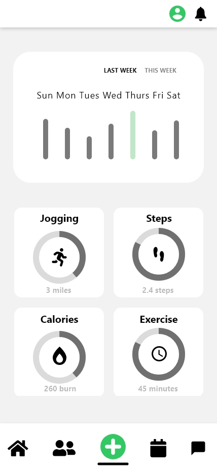
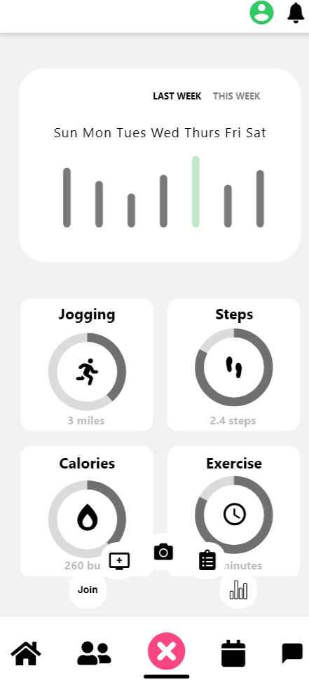
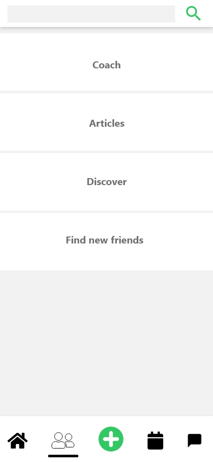
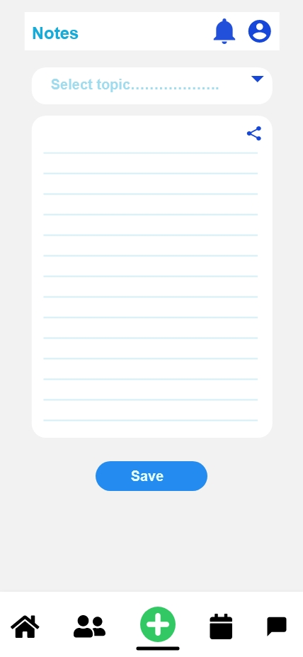
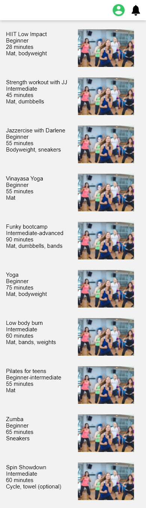
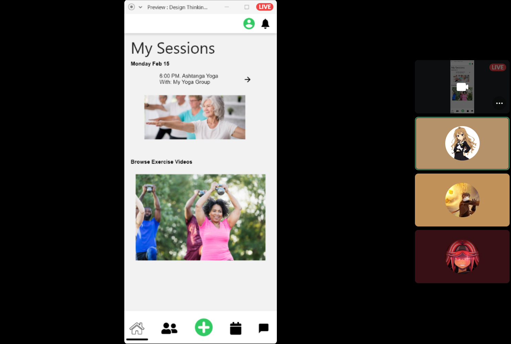

Since COVID-19 has drastically changed our lives, it has separated us from friends and families.
It has been harder to connect with the world to not go out while being in quarantine due to the pandemic.
The problem is defined by the fact that events and meetup groups and especially gyms are closed because COVID-19 has
put everyone in their houses to prevent the spread of the virus being in quarantine and not have social lives to
experience while staying at home. Without human interaction, there is no sense of community and connections but
isolation. The lackluster keeps us away to feel unmotivated and is unhealthy to be isolated in our homes without
human interactions. However, apps like Zoom and Meetups has given us the opportunities to interact online and maintain
our social lives to feel present. But what about staying in shape and exercising? The idea came across creating a
fitness app that is creating social circles for exercising group. The purpose of developing this app is to have a
little human interaction with friends, family and people across the globe that you can meet up online while staying at
home exercising together to be in shape and healthy. Brand story is about connecting healthy workouts together with
friends and family virtually together. Fitness anytime anywhere.
Empathy
Gather Inspiration to better understand the challenge:
Understand the Challenge
Review the Challenge
What are some things your team identified about the current design challenge?
Capture key thoughts, constraints, and barriers from the discussion.
Did your group rewrite the challenge after your discussion?
THOUGHTS
My thoughts of it was due to COVID-19 having changed dramatically everyone’s
lives and has affected everyone the ability to not meet people, family and friends to see
each other or to hang out and workout which is hard to get out there while in quarantine.
The idea of this app is to bring people together remotely at home while preventing the spread
of the virus. The thought of this app design would have a sense of a surviving community to
still obtain goals and aspirations to become better versions of ourselves and workout to keep
everyone safe, motivated and in shape. You can progress your workouts while at home.
CONSTRAINTS
The constraints of the environment at home may feel distracting and not
oriented at the same time. May not have enough space if living in a small house to workout.
Environment may not feel the same way as when you are in a fitness center, gym or outside with
a group. You may not have much discipline to workout if having mental state of distractions
BARRIERS
The barriers of this idea are not the same as seeing each other in a session working out
together in person and having someone to guide you in person while exercising a certain workout.
Cannot group up in pairs to do certain exercises or workouts to fully benefit.
A coach or your peers cannot see or monitor your progress since it is a remote workout and
cannot see the process of your workout.
HOW MIGHT WE…
Make the app persuasive to users who like to exercise and socialize with others
to bring together as a community. Also make the app check their progress to see any improvement.
Share What you Know What do you believe you already know about this challenge?
What would you like to learn more about? Capture your assumptions, and your questions
I have experienced this situation practicing Tomiki Aikido online
Shadow boxing with classmates
Warm ups together before we start
Basic hand techniques and self-defense but since we usually learn from being in contact it is much harder to really have contact to prevent the spread
Higher ranks cannot monitor the self-defense technique on a screen if they are doing the workout forms correctly
Exercising together in a very light workout
It has brought more people from other states to join our respectful community
I have seen one martial art school I used to go to in Taekwondo do online zoom meetings.
I want know how they promote kids and adults to promote in the next belt rank level
I've seen kids practice online on the school’s instagram posts
One of the pros is that kids and adults can still practice and connect with each other while working out practicing forms and self defense techniques
Cannot do sparring against each other if they are if they are practicing social distancing
I want to know more about
Why they don’t exercise in a Zoom meeting online
Is there a reason for not connecting with anyone to exercise
What will motivate people to go exercise
What are ways to persuade people to encourage working out
Select Research Participants
Interviewed people by asking their how their experience in working out remotely online feels both positive and negative experience.
Hardware – computer – larger screenneed phone camera – youtube video –
following along – instructor – stops
then shared experiences – zoom patched
group messaging –
host – responisibility – app control –
– stop – so room to speak
– users control – another choice –
– user – sports team – coach controls- authoring application – settings
customize – links to external resources
choices controls – the coach host –
group creativity –
different persona – commercial, instiutioncommunity, personal,
covid gone ? – distant relations – weekend – less travel – when ill can still
join -PRIVACY –
two minute videos –
inspiration – travel – locations
sound control – low level –
choices – speed up/slowvoice activated – more hands off
more auditory experiencesverbal coach cueing
NOT ANOTHER EXERCISE CLASS ON ZOOM –
1- SOCIALIZING PRIORITY – stealth
2 – STATS – health and fun
Ideate
Collaborate and refine ideas creating mockups:
I first sketch out the layout to visualize the look of the app on a phone.
Then I use vectors to make the layouts from pencil and paper to Adobe Illustrator using the pen tool,
pathfinder tool, text fonts, shapes and shape builder tool for the menus and icons.
I either pick blue or green for the workout app and decided to pick green for the app because it
represents “Go” as a green traffic light the land of the globe.
The name for the app I came up with is “Fitness Connect” and the meaning of the name presents togetherness,
community and connections remotely about working out for fun due to the pandemic.
Prototype
Create A Case Study Portfolio and Present DT Prototype:
In the Prototyping phase, I learn to use components and
plugins to connects the pages and icons to identify the
pages to access other pages for the app.
Credits: Eli “me” (Stats)



Credits: Aiden (Calendar, video/camera)
Credits: Laura Lee (Journal)

Credits: Marian (Home page, Workout Session and invitation)

Test
Participants present and walk through mockup of application pages
List systems, things and experiences
In the test phase, I interviewed with friends through
discord and streamed Adobe XD to hear feedback with
questions on my prototyping of the fitness app.

What would you like to see that is missing?
It's all there and straightforward.
Is there anything that is necessary or inappropriate?
Is there anything that is necessary or inappropriate?
I don't see anything inappropriate.
What would you like to add or keep?
Statistics page is good to keep. Keeps trackers in progress.
Home page is good because its what you see and informs you of upcoming events and sessions.
Would you find scheduling a calendar or a text message?
A calendar because you can visually see to get things done and easy to keep on track.
If you are given a message it's all scrambled and disorganized.
How would you explain what this app is to your friend?
Would tell him it's a fitness app that can be used to attend fitness classes with other people and
it's good if you have trouble with exercising. People are friendly and inviting.
Nice community where you can meet other people.
Can you think of other social media fitness apps that are similar to this?
Honestly cannot and never used a fitness app. Workout videos can help you online.
Browse page: Would you like to see the photos larger, same or smaller?
Photos are the same and are fine. If the picture is large then description has to be on the bottom.
Users would be frustrated if they have to read from top to bottom.
I like how it is right now because you can see multiple screens.
What would be a good number to exercise?
Maybe 3-5 people might be good but it's small and may help. Can't tell, it varies.
They can start whenever. Can book session anytime and anywhere. It's a reminder to join a session.
Example, there will be a live stream on twitch. Anyone can join and have it scheduled.
Compared to booking a session with limited slots its first come first serve.
How comfortable are you with exercising in front of a camera?
It's the same feeling as doing in public. Would feel awkward if i'm not doing the
form right and people would judge. It's half and half.
Would you prefer others to see a profile picture or live with friends; with strangers?
If you show your face to join a room you're allowed to because you're in a part of a session.
What did you find confusing?
Is it an open class or limited to scheduling or joining a session? Not clarified.
What are your thoughts about exercising with friends online?
Honestly it's fun! If you're with people or friends and they are motivating you is the same
as meeting in public. If you're doing the last rep people would cheer for you.